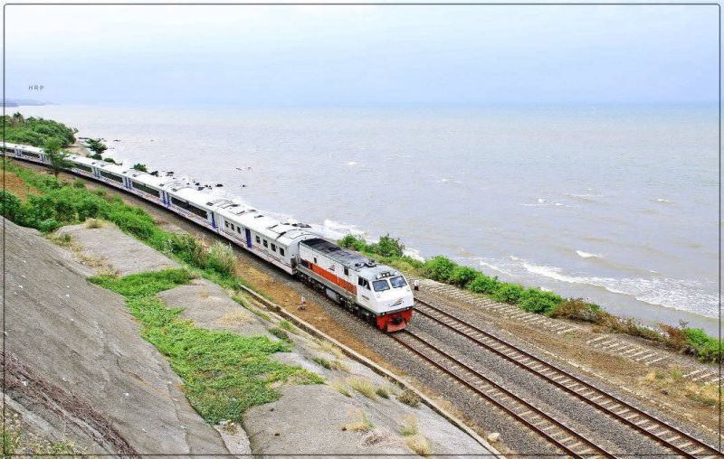
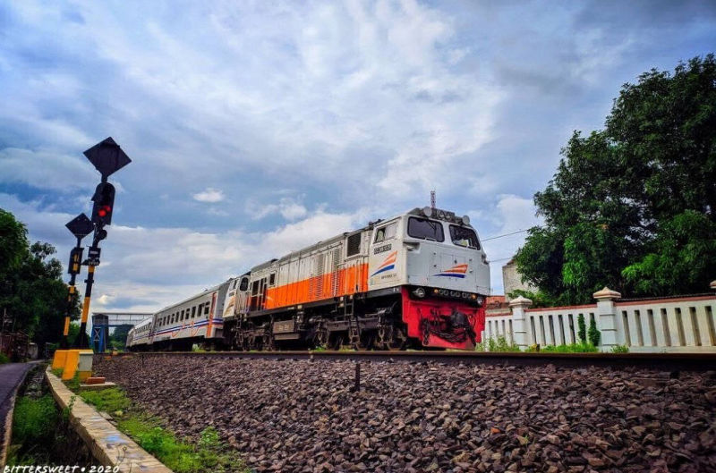
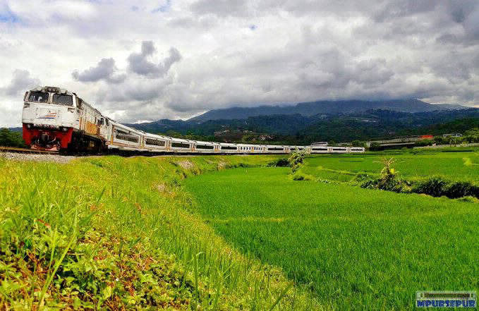

© Rio Prabowo
 © Erzi Anjar
© Erzi Anjar© Ilham Putra
© Purwata Yuda Syarifudin
 © Aldie Aiman
© Aldie AimanMenampilkan posisi kereta api jurusan Yogyakarta - Jakarta PP berdasarkan pada Grafik Perjalanan Kereta Api (GAPEKA) 2019
Halaman website ini berfungsi sebagai penduan penggunaan dari peta online yang dapat diakses disini. Terdapat beberapa informasi yang bisa didapatkan dari peta online tersebut yaitu:
1. Menampilkan posisi kereta api dengan ikon bergerak sesuai perhitungan kecepatan berdasarkan GAPEKA 2019 dengan pengaturan kontrol waktu selama 24 jam. Daftar kereta api yang ditampilkan bisa dilihat disini.
2. Menampilkan stasiun yang dilewati oleh kereta api jurusan Yogyakarta - Jakarta dilengkapi dengan gambar papan nama stasiun dan ketinggian stasiun. Daftar stasiun yang dilewati KA bisa dilihat disini.
3. Menampiilkan grafik ketinggian dari jaringan rel KA Yogyakarta - Jakarta yang terhubung dengan peta online.
4. Menampilkan lokasi beserta komplain dari pelanggan yang ditujukan kepada akun resmi PT. KAI yaitu @kai121 pada media sosial Twitter.
| NO. | NAMA KA | NO. KA | JURUSAN (STASIUN) | JAM BERANGKAT | JAM TIBA |
|---|---|---|---|---|---|
| 1 | TAKSAKA | 83 | YOGYAKARTA - GAMBIR | 09.00 WIB | 16.42 WIB |
| 2 | TAKSAKA | 84 | GAMBIR - YOGYAKARTA | 09.30 WIB | 17.10 WIB |
| 3 | TAKSAKA | 85 | YOGYAKARTA - GAMBIR | 21.00 WIB | 04.45 WIB |
| 4 | TAKSAKA | 86 | GAMBIR - YOGYAKARTA | 21.30 WIB | 05.02 WIB |
| 5 | BOGOWONTO | 141 | LEMPUYANGAN - PASAR SENEN | 09.45 WIB | 18.24 WIB |
| 6 | BOGOWONTO | 142 | PASAR SENEN - LEMPUYANGAN | 21.45 WIB | 06.07 WIB |
| 7 | GAJAHWONG | 143 | LEMPUYANGAN - PASAR SENEN | 18.10 WIB | 02.29 WIB |
| 8 | GAJAHWONG | 144 | PASAR SENEN - LEMPUYANGAN | 06.45 WIB | 15.08 WIB |
| 9 | FAJAR UTAMA YK | 145 | YOGYAKARTA- PASAR SENEN | 07.00 WIB | 15.11 WIB |
| 10 | FAJAR UTAMA YK | 146 | PASAR SENEN - YOGYAKARTA | 07.20 WIB | 15.29 WIB |
| 11 | SENJA UTAMA YK | 147 | YOGYAKARTA- PASAR SENEN | 19.14 WIB | 03.01 WIB |
| 12 | SENJA UTAMA YK | 148 | PASAR SENEN - YOGYAKARTA | 18.55 WIB | 03.07 WIB |
| 13 | PROGO | 307 | LEMPUYANGAN - PASAR SENEN | 15.20 WIB | 23.54 WIB |
| 14 | PROGO | 308 | PASAR SENEN - LEMPUYANGAN | 22.30 WIB | 06.52 WIB |
| NO. | STASIUN | NO. | STASIUN | NO. | STASIUN | NO. | STASIUN | NO. | STASIUN | NO. | STASIUN | NO. | STASIUN |
|---|---|---|---|---|---|---|---|---|---|---|---|---|---|
| 1 | Gambir
| 12 | Klari
| 23 | Haurgeulis
| 34 | Cirebon Prujakan
| 45 | Patuguran
| 56 | Ijo
| 67 | Jenar
|
| 2 | Pasar Senen
| 13 | Kosambi
| 24 | Cilegeh
| 35 | Luwung
| 46 | Karangsari
| 57 | Gombong
| 68 | Wojo
|
| 3 | Manggarai
| 14 | Dawuan
| 25 | Kadokangabus
| 36 | Sindanglaut
| 47 | Karanggandul
| 58 | Karanganyar
| 69 | Wates
|
| 4 | Jatinegara
| 15 | Cikampek
| 26 | Terisi
| 37 | Ciledug
| 48 | Purwokerto
| 59 | Sruweng
| 70 | Sentolo
|
| 5 | Cakung
| 16 | Tanjungrasa
| 27 | Telagasari
| 38 | Ketanggungan
| 49 | Notog
| 60 | Soka
| 71 | Rewulu
|
| 6 | Bekasi
| 17 | Pabuaran
| 28 | Jatibarang
| 39 | Larangan
| 50 | Kebasen
| 61 | Kebumen
| 72 | Patukan
|
| 7 | Tambun
| 18 | Pringkasap
| 29 | Kertasemaya
| 40 | Songgom
| 51 | Randegan
| 62 | Wonosari
| 73 | Yogyakarta
|
| 8 | Cikarang
| 19 | Pasirbungur
| 30 | Arjawinangun
| 41 | Prupuk
| 52 | Kroya
| 63 | Kutowinangun
| 74 | Lempuyangan |
| 9 | Lemahabang
| 20 | Cikaum
| 31 | Bangoduwa
| 42 | Linggapura
| 53 | Kemranjen
| 64 | Prembun
| ||
| 10 | Kedunggedeh
| 21 | Pegadenbaru
| 32 | Cangkring
| 43 | Bumiayu
| 54 | Sumpiuh
| 65 | Butuh
| ||
| 11 | Karawang
| 22 | Cipunegara
| 33 | Cirebon
| 44 | Kretek
| 55 | Tambak
| 66 | Kutoarjo
|
No special actions required, all sites you make with Mobirise are mobile-friendly. You don't have to create a special mobile version of your site, it will adapt automagically.
Mobirise is an easy website builder - just drop site elements to your page, add content and style it to look the way you like.
Mobirise offers many site blocks in several themes, and though these blocks are pre-made, they are flexible. You can combine blocks in different ways on your pages.
Mobirise gives you the freedom to develop as many websites as you like given the fact that it is a desktop app.
Publish your website to a local drive, FTP or host on Amazon S3, Google Cloud, Github Pages. Don't be a hostage to just one platform or service provider.
Just drop the blocks into the page, edit content inline and publish - no technical skills required.
© Erzi Anjar© Aldie Aiman
SHARE THIS PAGE!